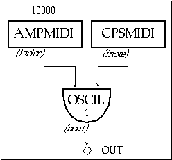
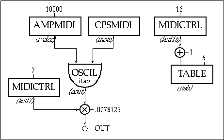
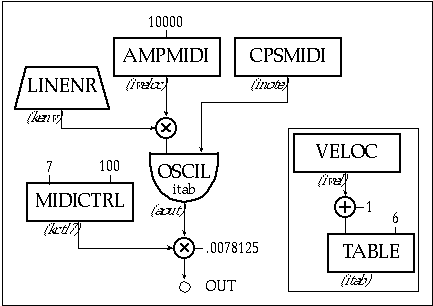
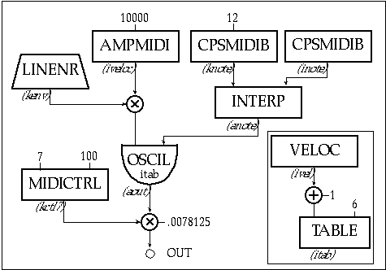
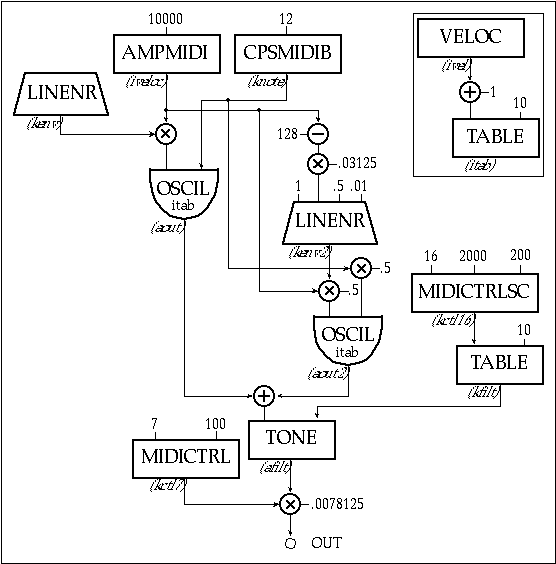
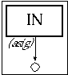

Csound was not originally designed to produce audio in real-time. At the time it was written, only large mainframes were fast enough to use for Csound and often sound files had to be taken to another machine with a digital-to-analog converter (DAC) just to hear the sound at all. Computers are much faster now and most come with a built in DAC. In fact, in the last 2 years, desktop computers capable of running Csound in real-time have become the standard.
Obviously, speed is the criterion for determining real-time performance. Csound must continually provide the next output sample before the previous sample has finished playing. If it ever falls behind, you will hear an audible dropout. Even if the gap is only a single sample in duration it will be heard as a full frequency click. In order to effectively use Csound in real-time, you need to understand more about how Csound generates audio.
Csound executes as a series of loops. For example, each time a note begins there is an i-time loop, and each k-period there is a k-time loop. We are concerned with the output buffer loop. As Csound runs, output samples are accumulated in internal memory, in what is called a buffer. When the number of samples in the buffer is equal to the software buffer size, designated in the command line (—b), Csound dumps these samples. Ordinarily this happens when sound is written to the hard-disk, but in real-time the samples are sent to the DAC. Then Csound starts to fill the buffer again and the process repeats itself.
Once the samples are sent to the DAC, the DAC converts them into an analog signal for amplifiers, headphones, etc. We can calculate exactly how long it will take to play a buffer, if we know the sample rate. For instance, if the buffer is 1024 mono samples and the sampling rate is 44100, the buffer is 23.2 milliseconds long. With these settings Csound would have 23.2 ms. to generate the next buffer of samples and pass it to the DAC in order to avoid a gap.
The DAC also has a buffer built in which is used for its internal processing. Csound allows us to designate the size of this buffer using the —B flag on the command line. This buffer is usually set smaller than, or equal to, the software buffer —b.
We can avoid having dropouts, simply by setting the buffers to be enormously big. Unfortunately, there is a trade-off. Csound is constantly working to stay ahead of the sound that we are hearing. There is a delay between when Csound generates a sound and when we hear it. This delay is called latency. When we are controlling Csound in real-time, this is the delay between the time that we change a control and the time that we hear the change. We can calculate the maximum amount of latency based upon our software and hardware buffer settings. The equation is as follows:
maximum latency(ms.) = 1000*(software buffer + hardware buffer)*nchnls/sr
If we were to use settings of —b 1024 and —B 256 in stereo and at sr = 44100, our maximum latency would be 58 ms. When sounds have a short attack time, most keyboard players notice latency when it is larger than 20 ms. In order to stay below 20 ms., our buffers would have to be less than 441 samples in total. Since many systems impose power of 2 limits on the sizes of buffers, this would mean —b 256 and —B 128.
Each computer system will have different limitations for using Csound in real-time. You can only find effective buffer sizes through trial and error. However, no matter what system you use, you will reach a point where Csound will not be able to produce sound fast enough. In that case, you will have to make the instrument simpler and faster, make the buffers larger (thus increasing the latency,) or use fewer notes.
Optimizing Orchestras for Speed
There are some simple guidelines to optimizing Csound orchestras for speed. The first is to make the maximum use of RAM. Lets take the example of creating a sine wave. The standard practice is to use an interpolating oscillator (oscili) on a function table (f-table) with 1025 points. When used on the same table, the interpolating function sounds better than its non-interpolating sibling (oscil). However, it also takes twice as long to process. If we use a table with 16536 points with oscil, it will sound better than oscili on 1025 points and run twice as fast. Thus. whenever possible, gain quality by using bigger tables instead of interpolating opcodes.
The math in an orchestra can also be streamlined. Never use a division when it is possible to multiply by the inverse. Division can take 4 to 8 times as long to process a multiplication.
Instead of:
| asig | oscil | kamp/8, 200, 1 |
use:
| asig | oscil | kamp*.125, 200, 1 |
Sometimes division is unavoidable, such as when you are dividing by a variable:
| asig | oscil | kamp/kenv, 200, 1 |
However, division using an i-rate variable can always be replaced by multiplication. Instead of:
| ifreq | midictrl | 16 |
| asig | oscil | kamp, 200/ifreq, 1 |
use:
| ifreq | midictrl | 16 |
| ifreq | = | 200/ifreq |
| asig | oscil | kamp, ifreq, 1 |
Now the division is only performed when the instrument is initialized, instead of at every
k-period. Another small speed increase can be realized by "in-lining" math functions. Instead of:
| kfilt | = | kfreq*kamp |
| aout | tone | asig, kfilt |
use:
| aout | tone | asig, kfreq*kamp |
Try to avoid conditional statements and instruments that require excessive initialization. Conditional statements can be quite slow in Csound. Lengthy initializations can mean that there will be too much processing at the beginning of a note, leading to dropouts whenever a new note begins, even though the note plays without gaps after it is initialized.
Finally, you can change to mono or decrease the sampling rate. These choices are primarily aesthetic, but be careful not to choose stereo and high sampling rates simply because that is the way you always work. If you are on stage playing through a keyboard amp, stereo is meaningless and 22050 kHz may sound just good as 44100 kHz. By changing these settings you can play 4 times as many notes at one time, or cut the latency by 75%!
Using xyin
Standard Csound instruments can only be adjusted through a tedious process of trial and error. The xyin opcode is an excellent option for speeding up the process of tweaking an existing instrument because xyin returns the coordinates of the mouse at preset intervals. Clearly, you can then use these coordinates to control values in an instrument. You can insert xyin into an existing orchestra without having to make changes in the score. Whenever the instrument which has the xyin is active, it will respond to the mouse.
The manual defines xyin as follows:
| kx, ky | xyin | iprd, ixmin, ixmax, iymin, iymax[, ixinit, iyinit] |
The minimum and maximum arguments set the size of the xyin window. The iprd argument determines how often (in seconds) a new coordinate is sensed. And the result, kx and ky, are the current mouse coordinates. If the mouse leaves the sensing window, the last coordinates are held until the mouse re-enters the window. The optional ixinit and iyinit arguments allow you to set a beginning coordinate for the mouse.
The file ch21_1.orc has two instruments. They are identical except that instr 2102 has an xyin added to control two of the parameters of the fof opcode. As you might know, fof is a complex opcode and it is often hard to predict exactly what will happen aurally when you alter a parameter. In instr 2101, only the base frequency and the formant frequency of the fof opcode are set in the score (p4 and p5) and the other parameters are set to reasonable values. The score plays a single note for 10 seconds.
| instr | 2101 | ||||||
| asig | fof | 20000, p4, p5, 0, 40, .003, .02, .007, 200, 1, 2, p3 | |||||
| out | asig | ||||||
| endin | |||||||
| instr | 2102 | ||||||
| kx,ky | xyin | .01, 0, 500, 0, 300 | |||||
| asig | fof | 20000, p4, p5+kx, 0+(ky*.02),40, .003, .02, .007, 200, 1, 2, p3 | |||||
| out | asig | ||||||
| endin | |||||||
| f 1 | 0 | 4097 | 10 | 1 | |||
| f 2 | 0 | 1025 | 5 | 0.0001 | 1025 | 1 | |
| ; in | st | dur | freq | form | |||
| i 2101 | 0 | 30 | 300 | 650 | |||
| i 2102 | 31 | 30 | 300 | 650 | |||
Figure 21.1 Orchestra and score code for instr 2101 and 2102, here a simple fof instrument (2101) is enhanced with real-time xyin control (2102).
In instr 2102 we have added the xyin opcode. This creates a sensing window 500 pixels wide and 300 pixels tall. The coordinates are updated every 1/100th of a second. With these settings, kx is returned as a number from 0 to 500 and ky will be from 0 to 300.
In the fof opcode, kx is used unaltered to set the formant frequency. The p4 value from the score is added to the current horizontal coordinate of the mouse. With our score, the formant frequency will be 650 (p5 + 0) when the mouse pointer is at the far left of the sensing window, and move up to 1150 (p5 + 500) when the mouse pointer is at the right side of the window. The ky value is scaled before it is used to affect the octaviation index. The range will be from 0 at the top to 6 (300 * .02) at the bottom.
When we run the score in real-time, the mouse will control two of the parameters. You can quickly find intriguing settings by simply moving the mouse into different regions of the sensing window. You can even simulate the effect of envelopes on the particular parameters by moving the mouse over a range of the window.
You can insert xyin into standard Csound instruments that are under development. Once you have an idea of the range of values you may want to use for a particular parameter, simply use the coordinates to move over that range. This allows you to pinpoint the exact values you would like to use in the final instrument. You can also use xyin as a performance tool, but you are limited to only two controls at a time. Additionally, you cannot alter the score during the performance.
Using MIDI
Csound also has a full suite of opcodes to interpret incoming MIDI messages. However, MIDI cannot be mixed into a conventional orchestra and score. An instrument must be completely controlled either by MIDI or from a score file. You cannot simply add a MIDI controller to an orchestra as we added xyin. You must design the instrument with MIDI in mind.
Before covering the MIDI opcodes, you should understand how Csound deals with incoming MIDI messages. Csound assigns the sixteen MIDI channels to instruments 1 through 16. Messages on channel 1 are received by instrument 1, channel 2 goes to instrument 2, and so on. Instruments beyond 16 cannot receive MIDI.
When Csound receives a note-on message on a particular channel, it creates a note for that instrument just as if it were reading from a score. When it receives a matching note-off, it terminates the note for that instrument. Your instruments must be triggered by note-ons and note-offs For example, an instrument which only reacts to controllers still needs to be triggered by a note-on at the beginning of the note, even if that note-on is not used for anything else in the instrument.
Because notes are triggered by note-ons and not by the score, the notes cannot have any parameter fields. In particular, since there is no p3 field, Csound does not know how long a note is going to last until it ends. This means that envelopes cannot be dependent on the length of a note. It also means that the release portion of an envelope must be calculated differently, as I will show later.
Csound looks to see if there are any new MIDI messages once per k-period. If any are present, Csound processes the oldest one. Csound handles only one MIDI message per k-period. This means that a six-note chord will be triggered one note at a time, and each attack will be separated by the length of a single ksmps. Csound does not react well to huge streams of MIDI data. For example, since only one controller message can be handled per k-period, sending messages more often will only cause Csound to lag behind and create a larger latency than normal. You can increase responsiveness by making the
k-periods shorter, though this has the side effect of slowing down the overall processing speed.
Midi.orc contains five tutorial MIDI instruments which I will describe in detail. I have designed them in mono, using very simple sound generators, to make them runable on as many systems as possible. Of course, you can substitute any Csound sound generation opcodes that your system can support in real-time. These instruments require a MIDI controller which can sense velocity and which has two assignable continuous controllers. I have used controllers 7 and 16, but you can change these as needed.

Figure 21.2 Block diagram of instr 2103, MIDI control of a table-lookup oscillator.
| instr | 2103 | |
| inote | cpsmidi | |
| iveloc | ampmidi | 10000 |
| aout | oscil | iveloc, inote, 1 |
| out | aout | |
| endin |
Figure 21.3 Orchestra code for instr 2103, a simple MIDI instrument.
Instrument 3 is almost the simplest possible MIDI instrument. When a note-on is received on channel 1, cpsmidi converts the note number to cycles per second, using a standard tempered scale. ampmidi reads the velocity of the note-on and automatically scales it from 0 to the value given in iscal (in this case, 10000). These values are used to control an oscil, where the velocity becomes the amplitude and the note number becomes the frequency.
Since a MIDI instrument does not read notes from a score, there are no i-card entries in Midi.sco. The score is still used to store the definitions of the f-tables. In addition, Midi.sco contains the following line:
| f 0 | 120 |
An f0 command instructs Csound to run for a specified amount of time, in this case 120 seconds. These instruments will be playable for 120 seconds, at which time Csound will stop executing. The instruments can be run without an f0 statement, but Csound will not stop executing unless you force it to abort.
Instrument 1 operates just like a standard synthesizer, with one exception: there is no preset limit on the number of notes that may sound at the same time. Instead, this number will be determined by how many notes your system can generate in real-time. This means there is no automatic protection from clipping. With instrument 1, if you have 4 or more full velocity notes, notes will begin to clip.

Figure 21.4 Block diagram for instr 2104, a MIDI instrument with mapped controller messages.
| instr | 2104 | |
| inote | cpsmidi | |
| iveloc | ampmidi | 10000 |
| kctl7 | midictrl | 7 |
| ictl16 | midictrl | 16 |
| itab | table | ictl16+1, 6 |
| aout | oscil | iveloc, inote, itab |
| out | aout*kctl7*0.0078125 | |
| endin |
Figure 21.5 Orchestra code for instr 2104, midi instrument with mapped and scaled controllers.
Instrument 4 addresses this concern by adding a volume control. In MIDI, controller 7 is customarily used for volume control, though with Csound any controller can be used for any purpose. midictrl 7 reads the current value of controller 7 and stores it in the variable kctl7, which is then used in the out command to scale the output signal. The value 0.0078125 is used in place of division by 128. The line kctl7 * 0078125 turns the controller value (0 -127) into a value between 0 and just less than 1. Csound only reads controllers as 7-bit values (0 - 127). It will not interpret a 14-bit controller value, which some MIDI systems form by combining two 7-bit controller messages.
Instrument 2 also contains a line to read controller 16, which is used to switch between f-tables 1 through 4 for the oscil command. The f-table field in oscil is an i variable and has to be an integer. After we read the controller value into the variable ictl16, we use a table command to look up the integer.
| f6 | 0 | 128 | -17 | 0 1 32 2 64 3 96 4 |
GEN17 was designed specifically for making stepped translation tables. The table is 128 points long so that we can use the controller values directly. -17 inhibits rescaling so that the values remain between 1 and 4. The controller value is 0 - 127, but table requires an index of 1 - 128, so we add one.
i variables can only be determined before a note begins and cannot be changed during the note. If you play instrument 2, you will notice that when you change controller 16, nothing will happen until the next note you play. Also, when you first start instrument 2, no sound will come out until you move controller 7. Csound assumes that all controllers are at 0 when you start. If you want a different starting value you need to move each controller before you begin to play. This will load the current value into Csound. In the case of controller 16, this means that you can choose which table to use before you play any notes.

Figure 21.6 Block diagram of instr 2105, a MIDI instrument with linear MIDI envelope and a "velocity switch" algorithim.
| instr | 2105 | |
| knote | cpsmidib | |
| iveloc | ampmidi | 10000 |
| kctl7 | midictrl | 7, 100 |
| ivel | veloc | |
| itab | table | ivel+1, 6 |
| kenv | linenr | 1, 1, 2, .01 |
| aout | oscil | iveloc*kenv, knote, itab |
| out | aout*kctl7*0.0078125 | |
| endin |
Figure 21.7 Orchestra code for instr 2105, a midi instrument with scaled controllers and velocity switching.
Instrument 5 shows how a MIDI controller can be initialized to a starting value. The value of 100 in the optional field of midictrl means that Csound will assume that the initial position of the controller is 100, not 0. You will not need to move controller 7 in order to hear sound with this instrument.
Instrument 3 uses note velocity instead of controller 16 to switch between f-tables. Csound frees you to use a single piece of data in multiple ways. Because we have already designed a table to translate a 7-bit value into the integer we need, we use the veloc command instead of the ampmidi command. This returns the velocity of the note as a value between 0 -127, just as controller 16 did in instrument 2, which we can then use in the same table command as in instrument 2.
We have also added an envelope to the note using the linenr opcode, which is a special envelope for use with MIDI instruments. It automatically extends the note to allow for a release after the note-off is received. This is the only way to create a release envelope in Csound. In this case, there is a 1 second attack and a 2 second release. The .01 determines how steep the release is. Smaller numbers make a sharper cutoff.
Finally, we have changed the cpsmidi command to cpsmidib. cpsmidib automatically combines the current pitch bend and the note number in Hertz. It is expressed as a k value so that we can use the pitch wheel continuously while a note is playing. cpsmidib always sets the pitch bend range to +/- 1 semitone.

Figure 21.8 Block diagram of instr 2106, a MIDI instrument with pitch bend and smoothing via the interp opcode.
| instr | 2106 | |
| knote | cpsmidib | 12 |
| inote | cpsmidib | |
| iveloc | ampmidi | 10000 |
| kctl7 | midictrl | 7, 100 |
| ivel | veloc | |
| itab | table | ivel+1, 6 |
| anote | interp | knote, inote |
| kenv | linenr | 1, 1, 2, .01 |
| aout | oscil | iveloc*kenv, anote, itab |
| out | aout*kctl7*0.0078125 | |
| endin |
Figure 21.9 Orchestra code for instr2106, a midi instrument with controllers, velocity switching, and pitch bend.
In instrument 6 we use the pitch bend information to create bends of +/- one octave. We use the optional field of cpsmidib to set the range to 12, which gives us +/- 12 semitones.
Many MIDI synthesizers and controllers do not send full, 14-bit, pitch change messages. Instead, the manufacturers save money by sending 7-bit messages, even if they use the full 14 bits for internal synthesis. 7-bit values often result in audible steps when used to control changes in pitch. If you run instrument 4 without the interp command you will hear the steps clearly. interp smoothes the corners on the steps. interp requires an initial value to begin interpolation. inote is assigned to be the initial value of the note-on message.
There are still only 128 possible locations for the pitch wheel, though we are smoothing the transition between steps. This is a common problem when you use MIDI with Csound: 128 values often do not give an adequate resolution for many Csound parameters, so some smoothing scheme is needed.

Figure 21.10 A block diagram of instr 2107, a midi instrument with a sub-oscillator and velocity controller attack time and a continous cnotrolled low pass filter for EQ.
| instr | 2107 | |
| knote | cpsmidib | |
| iveloc | ampmidi | 10000 |
| kctl7 | midictrl | 7 |
| ivel | veloc | |
| itab | table | ivel+1, 6 |
| kenv | linenr | 1, 1, 2, .01 |
| kctl16 | midictrlsc | 16, 2000, 200 |
| kfilt | table | kctl16, 10 |
| aout | oscil | iveloc*kenv, knote, itab |
| kenv2 | linenr | 1, (128-iveloc)*.03125, .5, .01 |
| aout2 | oscil | iveloc*kenv2*.5, knote*.5, itab |
| afilt | tone | aout+aout2, kfilt |
| out | afilt*kctl7*0.0078125 | |
| endin |
Figure 21.12 Orchestra code for instr 2107, a midi instrument with a controllers, velocity, mapping, pitch bend, and a sub-oscillator.
Instrument 7 shows how a MIDI instrument can grow to be more responsive and more interesting. We have added a second oscillator one octave below the first one, at half volume. This oscillator has its own envelope. The velocity of the note is used to determine the attack time. .03125 = 4 / 128. A velocity of 0 will result in a 4 second attack. A velocity of 127 will cause the attack to be .03125 seconds.
We have also added a low pass filter to the combined output of the two oscillators. The cutoff frequency is set by controller 16. We use a new opcode, midictrlsc, which has a scaling function built in. The range is 2000 and the offset is 200, so kfilt will vary between 200 and 2200 Hz. We use kfilt as the cutoff frequency for the filter.
These instruments show the first steps in designing a MIDI controlled Csound instrument. Csound also has opcodes for reading aftertouch (aftouch) and channel pressure (chpress). These commands are similar to pchbend which we used in instrument 4. Note numbers can also be read as 0 -128 using notenum, or in pch units using pchmidi.
The in Opcode
Real-time synthesis holds the promise of real-time signal processing. In Csound, it is a standard practice to use sound files as input to instruments, either using soundin or by loading the file into a GEN01 table. The in commands (in, ins, inq) allow you to retrieve real-time audio input from your computer's analog-to-digital (ADC) converters. Unfortunately, standard desktop systems usually have a large (~300 ms.) latency when using audio from the audio input connections.
The in commands are very similar to soundin, except that no file is specified. They return the current sample values from the analog-to-digital-converter (ADC) in either mono (in), stereo (ins), or quad (inq). There is however, another stage of buffering involved. The ADC hardware buffers the audio and Csound buffers it again. There is no standard way to set the size of these buffers. These buffers increase the amount of latency already present in the output stage.

Figure 21.11 Block diagram of instr 2108, a simple audio input instrument.
| instr | 2108 | |
| asig | in | |
| out | asig | |
| endin |
Figure 21.12 Orchestra code of instr 2108, passing audio direct from input to output.
Instrument 8 in In.orc is the simplest possible instrument using real-time input. The input signal is read in mono into asig and then it is immediately sent to the audio outputs. When you run this with In.sco, you will hear the audio input to your computer reflected through the audio output for 30 seconds. It will be delayed by the latency of your system.
Conclusion
Real-time software synthesis and processing is the future of audio production. We are just beginning to see affordable systems which can perform audio manipulation in real-time. All of the Csound real-time opcodes have been added to a pre-existing structure, which places distinct limitations on their use. Current Csound developers however, are paying more attention to real-time possibilities and, slowly, Csound will get faster and more flexible. As computers get faster and manufacturers improve their sound hardware, real-time Csound will seem less like an esoteric option and more like an essential feature.